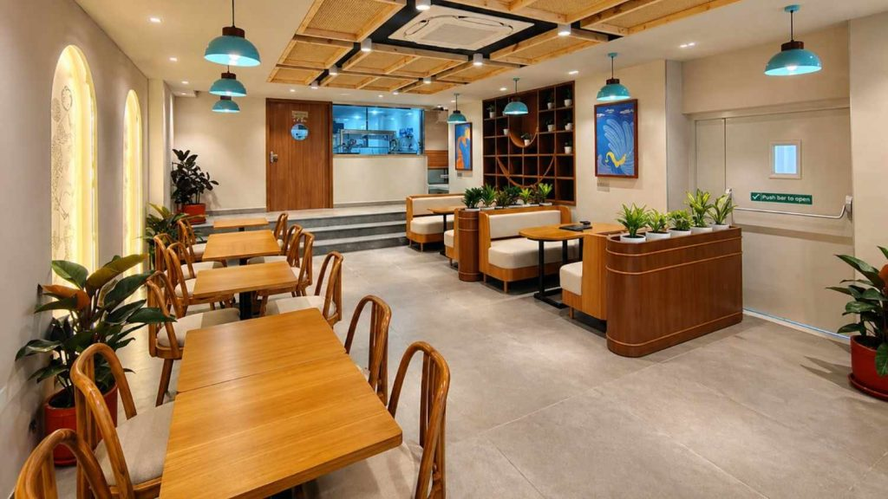
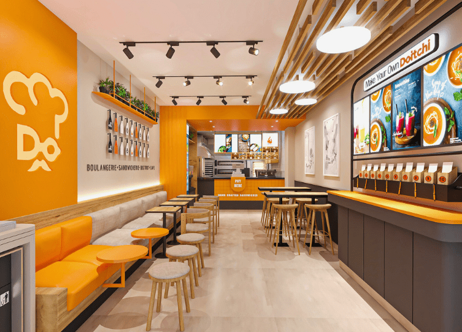
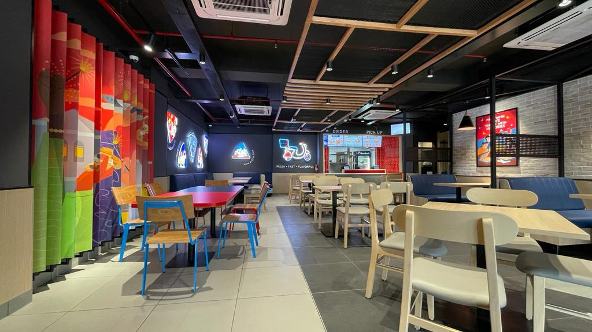
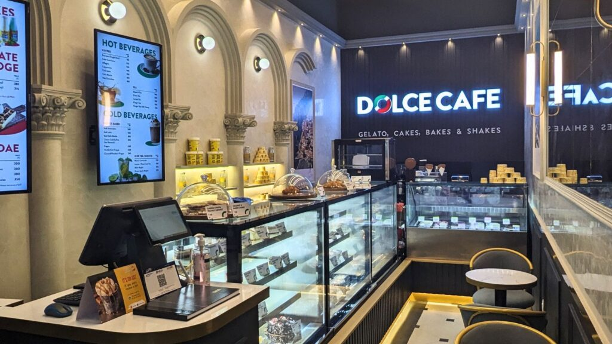
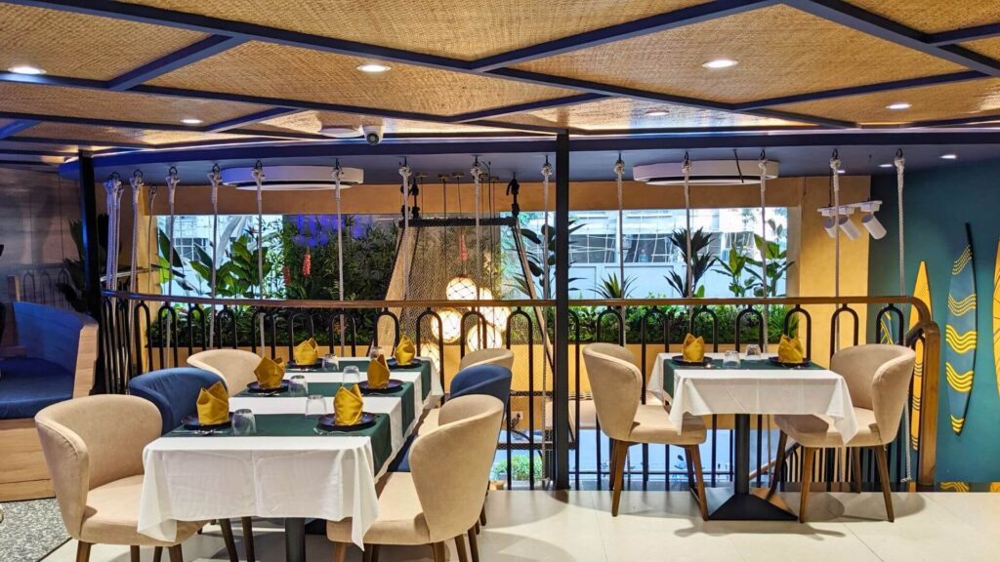
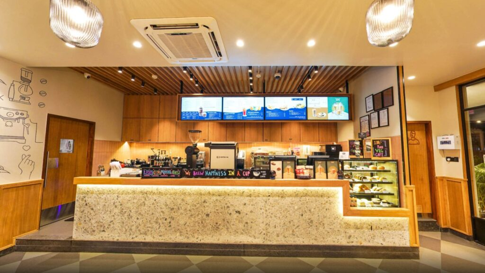
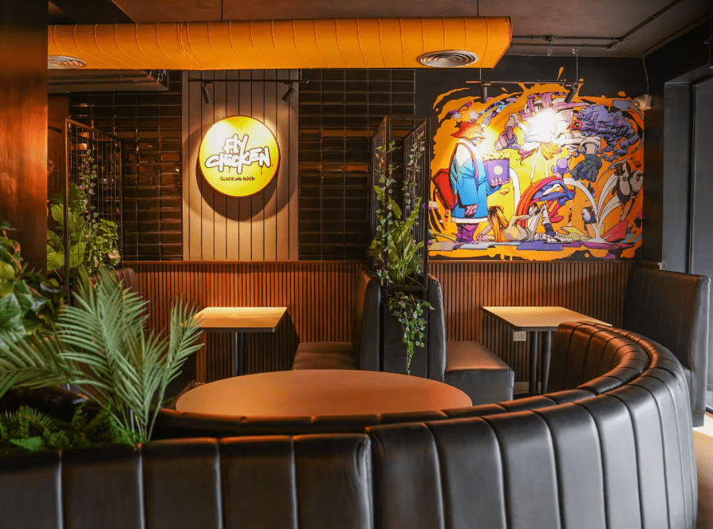
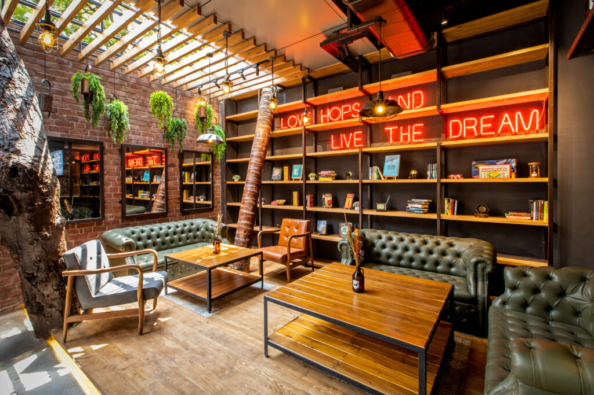
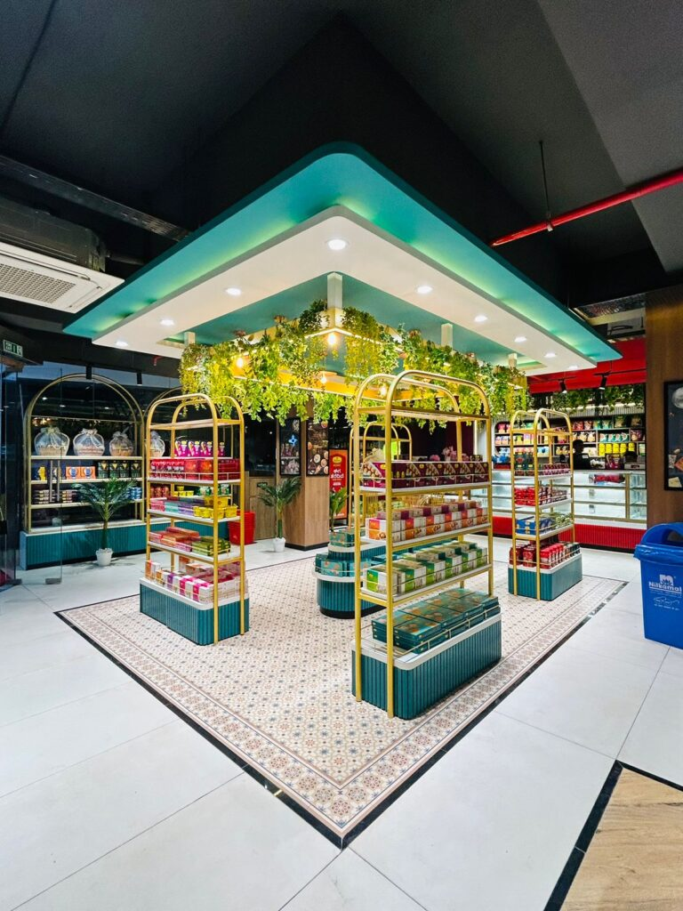
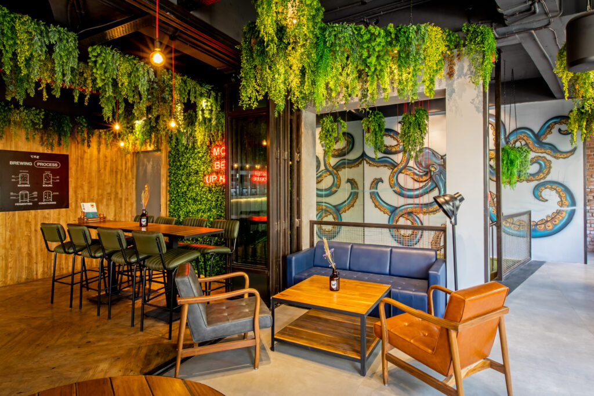

First-time founders
You have the idea, cuisine and ambition. We help turn that brief into a workable physical space and a clear design direction.


Planning a new restaurant, café, bar or QSR? SprintCo brings concept design, space planning, brand thinking, MEP coordination and build planning together—so your idea can move from first brief to a space that looks right, works hard and is ready to scale.
It is a brand, an operating system and a customer journey occupying the same square footage.
Good restaurant design has to do more than photograph well. Guests need to understand where to enter, order, sit and move. The kitchen and service team need practical circulation. Lighting, acoustics, ventilation, utilities, signage and materials need to work together. And the final space still has to feel unmistakably yours.
SprintCo is built around that F&B reality—bringing the creative, operational and technical layers into one coordinated process.

This service is designed for founders and operators who need more than a beautiful concept—they need a restaurant that can open, operate and grow.
You have the idea, cuisine and ambition. We help turn that brief into a workable physical space and a clear design direction.

You are opening the next location, refreshing an existing format or creating a stronger design language for expansion.

You need a concept that can repeat without becoming generic—balancing brand consistency, local site conditions and rollout efficiency.

You need speed, operational logic, repeatable details and a customer journey designed around ordering, pickup and throughput.

You need counter logic, display, barista workflow, seating mix and brand experience to work together in a compact footprint.

You need atmosphere without compromising service flow, acoustics, lighting, back-of-house planning and technical coordination.
The scope can be structured around what your project actually needs—from early-stage design consultancy to a coordinated design-and-build pathway.
Design direction, mood, materials, lighting, spatial identity and a concept that connects the brand with the guest experience.
FOH and BOH zoning, seating strategy, customer circulation, kitchen relationships, service paths, queues, pickup and operational flow.
Brand thinking that can extend across the space, signage, menus, packaging, graphics and other customer touchpoints.
Photorealistic views that help you understand and approve the spatial experience before execution begins.
Mechanical, electrical and plumbing planning coordinated with the design intent and operational requirements of an F&B space.
Detailed drawings, finish information and coordination packages required to translate approved design intent into execution.
Design-linked quantity and cost planning to help the project team understand where the budget is going and where value engineering may be needed.
A coordinated path from approved design into fabrication, installation and site execution, depending on project scope and delivery model.
Design systems that identify what should remain consistent, what can adapt and what can be simplified for future locations.
The exact scope changes by project, but the logic stays simple: understand first, design second, coordinate early and build from approved information.
Business model, cuisine, target audience, service format, brand ambition, site constraints and budget priorities.
Review the space, access, services, existing conditions and major technical constraints before design decisions harden.
Set the relationship between guest zones, kitchen/BOH, ordering, pickup, seating and circulation.
Define the visual language, material palette, lighting character, furniture direction and signature design moments.
Develop the selected route into an understandable, coordinated spatial experience for review and approval.
Align identity, graphic touchpoints, signage and customer-facing brand moments with the physical environment.
Coordinate services and detailed requirements early enough to reduce avoidable clashes and late redesign.
Translate approved design intent into the documentation and quantities required for execution and commercial review.
Move into site/fabrication coordination, handover and—where relevant—convert lessons from the first site into a more repeatable format.
A premium restaurant, a 300 sq. ft. kiosk and a high-throughput QSR should not be designed with the same playbook.

Guest experience, seating mix, kitchen-service relationships, acoustics, lighting and long-dwell comfort.
Restaurant projects
Counter and barista workflow, product display, flexible seating, plug-in behaviour and repeat-visit character.
Café design & build
Queue logic, ordering, pickup, kitchen throughput, delivery integration and rollout consistency.
QSR design & build
Atmosphere, visibility, bar ergonomics, service movement, acoustics and lighting that changes with the daypart.
Bar projects
Display-first planning, product visibility, service sequence and a brand environment that supports impulse purchase.
Kiosk & bakery projects
A design DNA that can survive different footprints, landlords, cities and budgets without losing recognition.
All projects
Performance-led QSR planning: queue, ordering, seating flow, brand consistency and fast fit-out logic.
View the Pizza Hut case study
Café planning, brand experience, counter logic and scalable design thinking – carried from Mumbai to Banjara Hills, Hyderabad.
View the Blue Tokai case study
Design-to-execution coordination for an experience-led F&B format.
“From design to execution, SprintCo handled everything.”BrewDogView the BrewDog case study

Mood, brand identity, operational needs and guest experience working together at scale – a 5,640 sq. ft. outlet designed by SprintCo and delivered by FlatPackCo.
View the SOCIAL E-City case studyThere is no responsible one-number answer. Programme depends on the site, scope, approvals, services, procurement route and how quickly decisions are closed.
Brief, feasibility, planning, concept, 3D development and approvals. The pace depends heavily on project complexity and decision turnaround.
Working drawings, MEP coordination, material finalisation, BOQ/commercial review and execution readiness.
Site work, fabrication, installation, testing, snagging and handover. Integrated and modular methods can compress this stage for suitable projects.
SprintCo and FlatPackCo have published a 45-day restaurant/café delivery model for suitable, well-coordinated projects. Treat it as a delivery approach—not a blanket promise for every site.
See the 45-Day Build TimelineCost is driven by the brief and the building—not just the area.
Two restaurants of the same size can have very different budgets depending on kitchen intensity, services, finishes, landlord conditions, equipment, façade, furniture and the amount of work already available at site.
Answer the questions a founder is already asking before the first call.
A restaurant design and build partner connects the customer-facing concept with operational planning, technical services and execution. Instead of treating interiors, brand, MEP and site delivery as unrelated packages, the team coordinates them around one approved design direction and one project brief.
Yes. A new-site engagement can begin with feasibility and planning, then move through concept design, 3D development, brand integration, MEP coordination, technical documentation and build planning depending on the agreed scope.
No. SprintCo focuses on F&B formats including restaurants, cafés, QSRs, bars, bakeries and other hospitality concepts. The process is adapted to the operating model of each format rather than forcing one design template onto every project.
Yes. SprintCo’s current offering includes brand identity and strategy alongside concept design, rollout, MEP design and build solutions, allowing the physical space and customer-facing identity to be developed in a more coordinated way.
SprintCo includes MEP design within its current service offering. The exact deliverables, consultant interfaces and responsibilities should be confirmed in the project scope before work starts.
It depends on site readiness, size, approvals, design complexity, procurement, technical requirements and execution method. Fast-track delivery is possible for suitable projects when design, technical coordination, decisions and fabrication are planned together, but the project programme should be confirmed after a site and scope review.
There is no reliable national flat rate for every restaurant. The major cost drivers are area, format, finish level, kitchen and service requirements, HVAC/exhaust, electrical and plumbing infrastructure, furniture, lighting, signage, existing site condition and landlord or statutory requirements. A realistic budget should be built from the project brief and site information.
Yes. SprintCo’s offering includes rollout and expansion. For multi-site brands, the objective is to define a repeatable design language while allowing controlled adaptation for site dimensions, local conditions and operational requirements.
If available, share your city, site address, floor plan or area, restaurant format, cuisine, expected seating, target opening date, budget range and any brand references. Even if some of these are undecided, the first conversation can help identify what needs to be resolved next.